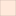

<!doctype html>
<html lang="en">
    <head>
        <meta charset="utf-8">
        <meta http-equiv="X-UA-Compatible" content="IE=edge">
        <meta name="viewport" content="initial-scale=1,user-scalable=no,maximum-scale=1,width=device-width">
        <meta name="mobile-web-app-capable" content="yes">
        <meta name="apple-mobile-web-app-capable" content="yes">
        <link rel="stylesheet" href="css/leaflet.css">
        <link rel="stylesheet" href="css/L.Control.Layers.Tree.css">
        <link rel="stylesheet" href="css/qgis2web.css">
        <link rel="stylesheet" href="css/fontawesome-all.min.css">
        <link rel="stylesheet" href="css/leaflet.photon.css">
        <link rel="stylesheet" href="css/leaflet-measure.css">
        <style>
        #map {
            width: 1218px;
            height: 307px;
        }
        </style>
        <title>John Snow's 1854 Cholera Map - Soho, London</title>
    
<style id="ges723-viewfix">
html, body {
    width: 100% !important;
    height: 100% !important;
    margin: 0 !important;
    padding: 0 !important;
    overflow: hidden !important;
}

#map {
    width: 100vw !important;
    height: 100vh !important;
    height: 100dvh !important;
    margin: 0 !important;
    padding: 0 !important;
}
</style>


<style id="ges723-enhancement-css">
.ges723-pump-label {
    background: rgba(255,255,255,0.93);
    border: 1px solid rgba(40,70,90,0.25);
    box-shadow: 0 1px 3px rgba(0,0,0,0.14);
    border-radius: 4px;
    color: #17465a;
    font-family: Arial, sans-serif;
    font-weight: 600;
    font-size: 11px;
    padding: 3px 5px;
    white-space: nowrap;
}

.ges723-pump-label.broad {
    color: #b22236;
    font-weight: 800;
    font-size: 13px;
}

.ges723-kde-control {
    background: rgba(255,255,255,0.96);
    border-radius: 7px;
    padding: 11px 13px;
    min-width: 185px;
    box-shadow: 0 2px 9px rgba(0,0,0,.22);
    color: #26364a;
    font: 12px Arial, sans-serif;
}

.ges723-kde-title {
    font-weight: bold;
    font-size: 14px;
    margin-bottom: 3px;
}

.ges723-kde-subtitle {
    font-size: 10px;
    color: #687789;
    margin-bottom: 9px;
}

.ges723-kde-control label {
    display: block;
    margin: 7px 0 4px;
}

.ges723-kde-control select,
.ges723-kde-control input {
    width: 100%;
    accent-color: #bb4250;
}

#ges723-opacity-value {
    font-size: 11px;
    font-weight: bold;
}

@media (max-width: 600px) {
    .ges723-kde-control {
        min-width: 150px;
        padding: 8px;
        font-size: 11px;
    }
}
</style>


<style id="ges723-final-css">
.ges723-pump-label-icon {
    background: transparent !important;
    border: none !important;
    pointer-events: none !important;
}

.ges723-pump-text {
    position: absolute;
    display: inline-block;
    transform: translate(-50%, -155%);
    padding: 3px 5px;
    background: rgba(255,255,255,.94);
    border: 1px solid rgba(30,70,90,.22);
    border-radius: 4px;
    color: #16566b;
    font-family: Arial, sans-serif;
    font-size: 11px;
    font-weight: 600;
    line-height: 1.25;
    white-space: nowrap;
    box-shadow: 0 1px 4px rgba(0,0,0,.18);
    pointer-events: none;
}

.ges723-pump-text.broad {
    color: #ae2037;
    font-size: 13px;
    font-weight: 800;
    border-color: rgba(174,32,55,.5);
}

.ges723-basemap-control {
    background: rgba(255,255,255,.96);
    border-radius: 5px;
    padding: 8px 11px;
    box-shadow: 0 1px 7px rgba(0,0,0,.25);
    color: #24354b;
    font: 12px Arial, sans-serif;
}

.ges723-basemap-control label {
    display: flex;
    align-items: center;
    gap: 4px;
    cursor: pointer;
}

.ges723-basemap-control input {
    accent-color: #1a7183;
    cursor: pointer;
}

@media (max-width:600px) {
    .ges723-pump-text {
        font-size: 9px;
        padding: 2px 3px;
    }

    .ges723-pump-text.broad {
        font-size: 11px;
    }

    .ges723-basemap-control {
        padding: 6px 8px;
        font-size: 11px;
    }
}
</style>

<link rel="icon" href="data:,">

<style id="ges723-label-toggle-css">

.ges723-label-toggle-row {
    display: flex;
    align-items: center;
    gap: 6px;
    margin-top: 7px;
    padding-top: 7px;
    border-top: 1px solid #e2e6ea;
    cursor: pointer;
}

/* Hide only pump labels, not pump symbols */
body.ges723-labels-hidden .ges723-pump-label-icon,
body.ges723-labels-hidden .ges723-pump-label,
body.ges723-labels-hidden .ges723-pump-text {
    display: none !important;
}

</style>

</head>
    <body>
        <div id="map">
        </div>
        <script src="js/qgis2web_expressions.js"></script>
        <script src="js/leaflet.js"></script>
        <script src="js/L.Control.Layers.Tree.min.js"></script>
        <script src="js/leaflet-heat.js"></script>
        <script src="js/leaflet-svg-shape-markers.min.js"></script>
        <script src="js/leaflet.rotatedMarker.js"></script>
        <script src="js/leaflet.pattern.js"></script>
        <script src="js/leaflet-hash.js"></script>
        <script src="js/Autolinker.min.js"></script>
        <script src="js/rbush.min.js"></script>
        <script src="js/labelgun.min.js"></script>
        <script src="js/labels.js"></script>
        <script src="js/leaflet.photon.js"></script>
        <script src="js/leaflet-measure.js"></script>
        <script src="data/Waterpumps_0.js"></script>
        <script src="data/Choleradeaths1854_1.js"></script>
        <script src="data/Choleraheatmap50m_2.js"></script>
        <script src="data/Pumpcatchments_3.js"></script>
        <script>
        var highlightLayer;
        function highlightFeature(e) {
            highlightLayer = e.target;

            if (e.target.feature.geometry.type === 'LineString' || e.target.feature.geometry.type === 'MultiLineString') {
              highlightLayer.setStyle({
                color: 'rgba(255, 255, 0, 1.00)',
              });
            } else {
              highlightLayer.setStyle({
                fillColor: 'rgba(255, 255, 0, 1.00)',
                fillOpacity: 1
              });
            }
        }
        var map = L.map('map', {
            zoomControl:false, maxZoom:28, minZoom:1
        })
        var hash = new L.Hash(map);
        
		map.attributionControl.addAttribution(
		    'Data: R. Wilson, digitised from J. Snow (1854); ' +
		    'Basemap &copy; ' +
		    '<a href="https://www.openstreetmap.org/copyright" ' +
		    'target="_blank" rel="noopener noreferrer">' +
		    'OpenStreetMap contributors</a>'
		);
        var autolinker = new Autolinker({truncate: {length: 30, location: 'smart'}});
        // remove popup's row if "visible-with-data"
        function removeEmptyRowsFromPopupContent(content, feature) {
         var tempDiv = document.createElement('div');
         tempDiv.innerHTML = content;
         var rows = tempDiv.querySelectorAll('tr');
         for (var i = 0; i < rows.length; i++) {
             var td = rows[i].querySelector('td.visible-with-data');
             var key = td ? td.id : '';
             if (td && td.classList.contains('visible-with-data') && feature.properties[key] == null) {
                 rows[i].parentNode.removeChild(rows[i]);
             }
         }
         return tempDiv.innerHTML;
        }
        // modify popup if contains media
        function addClassToPopupIfMedia(content, popup) {
            var tempDiv = document.createElement('div');
            tempDiv.innerHTML = content;
            var imgTd = tempDiv.querySelector('td img');
            if (imgTd) {
                var src = imgTd.getAttribute('src');
                if (/\.(jpg|jpeg|png|gif|bmp|webp|avif)$/i.test(src)) {
                    popup._contentNode.classList.add('media');
                    var img = popup._contentNode.querySelector('td img');
                    if (img) {
                        // If already loaded (cache), update immediately
                        if (img.complete && img.naturalHeight > 0) {
                            popup.update();
                        } else {
                            img.addEventListener('load', function() {
                                popup.update();
                            });
                            img.addEventListener('error', function() {
                                popup.update();
                            });
                        }
                    }
                } else if (/\.(mp3|wav|ogg|aac)$/i.test(src)) {
                    var audio = document.createElement('audio');
                    audio.controls = true;
                    audio.src = src;
                    imgTd.parentNode.replaceChild(audio, imgTd);
                    popup._contentNode.classList.add('media');
                    setTimeout(function() {
                        popup.setContent(tempDiv.innerHTML);
                        popup.update();
                    }, 10);
                } else if (/\.(mp4|webm|ogg|mov)$/i.test(src)) {
                    var video = document.createElement('video');
                    video.controls = true;
                    video.src = src;
                    video.style.width = "400px";
                    video.style.height = "300px";
                    video.style.maxHeight = "60vh";
                    video.style.maxWidth = "60vw";
                    imgTd.parentNode.replaceChild(video, imgTd);
                    popup._contentNode.classList.add('media');
                    // Aggiorna il popup quando il video carica i metadati
                    video.addEventListener('loadedmetadata', function() {
                        popup.update();
                    });
                    setTimeout(function() {
                        popup.setContent(tempDiv.innerHTML);
                        popup.update();
                    }, 10);
                } else {
                    popup._contentNode.classList.remove('media');
                }
            } else {
                popup._contentNode.classList.remove('media');
            }
        }
        var zoomControl = L.control.zoom({
            position: 'topleft'
        }).addTo(map);
        var measureControl = new L.Control.Measure({
            position: 'topleft',
            primaryLengthUnit: 'meters',
            secondaryLengthUnit: 'kilometers',
            primaryAreaUnit: 'sqmeters',
            secondaryAreaUnit: 'hectares'
        });
        measureControl.addTo(map);
        document.getElementsByClassName('leaflet-control-measure-toggle')[0].innerHTML = '';
        document.getElementsByClassName('leaflet-control-measure-toggle')[0].className += ' fas fa-ruler';
        var bounds_group = new L.featureGroup([]);
        function setBounds() {
            if (bounds_group.getLayers().length) {
                map.fitBounds(bounds_group.getBounds());
            }
        }
        function pop_Waterpumps_0(feature, layer) {
            layer.on({
                mouseout: function(e) {
                    for (var i in e.target._eventParents) {
                        if (typeof e.target._eventParents[i].resetStyle === 'function') {
                            e.target._eventParents[i].resetStyle(e.target);
                        }
                    }
                },
                mouseover: highlightFeature,
            });
            var popupContent = '<table>\
                    <tr>\
                        <th scope="row">Pump name</th>\
                        <td>' + (feature.properties['Name'] !== null ? autolinker.link(String(feature.properties['Name']).replace(/'/g, '\'').toLocaleString()) : '') + '</td>\
                    </tr>\
                </table>';
            var content = removeEmptyRowsFromPopupContent(popupContent, feature);
			layer.on('popupopen', function(e) {
				addClassToPopupIfMedia(content, e.popup);
			});
			layer.bindPopup(content, { maxHeight: 400 });
        }
        function style_Waterpumps_0_0(feature) {
            var context = {
                feature: feature,
                variables: {}
            };
            // Start of if blocks and style check logic
            if (exp_Waterpumps_0rule0_eval_expression(context)) {
                  return {
                pane: 'pane_Waterpumps_0',
                shape: 'diamond',
                radius: 6.5,
                opacity: 1,
                color: 'rgba(32,50,71,1.0)',
                dashArray: '',
                lineCap: 'butt',
                lineJoin: 'miter',
                weight: 1.0,
                fill: true,
                fillOpacity: 1,
                fillColor: 'rgba(22,122,135,1.0)',
                interactive: true,
            };
                }
                else if (exp_Waterpumps_0rule1_eval_expression(context)) {
                  return {
                pane: 'pane_Waterpumps_0',
                shape: 'diamond',
                radius: 10.4,
                opacity: 1,
                color: 'rgba(255,255,255,1.0)',
                dashArray: '',
                lineCap: 'butt',
                lineJoin: 'miter',
                weight: 1.0,
                fill: true,
                fillOpacity: 1,
                fillColor: 'rgba(189,36,54,1.0)',
                interactive: true,
            };
                }
            else {
                return {fill: false, stroke: false};
            }
        }
        map.createPane('pane_Waterpumps_0');
        map.getPane('pane_Waterpumps_0').style.zIndex = 400;
        map.getPane('pane_Waterpumps_0').style['mix-blend-mode'] = 'normal';
        var layer_Waterpumps_0 = new L.geoJson(json_Waterpumps_0, {
            attribution: '',
            interactive: true,
            dataVar: 'json_Waterpumps_0',
            layerName: 'layer_Waterpumps_0',
            pane: 'pane_Waterpumps_0',
            onEachFeature: pop_Waterpumps_0,
            pointToLayer: function (feature, latlng) {
                var context = {
                    feature: feature,
                    variables: {}
                };
                return L.shapeMarker(latlng, style_Waterpumps_0_0(feature));
            },
        });
        bounds_group.addLayer(layer_Waterpumps_0);
        map.addLayer(layer_Waterpumps_0);
        function pop_Choleradeaths1854_1(feature, layer) {
            layer.on({
                mouseout: function(e) {
                    for (var i in e.target._eventParents) {
                        if (typeof e.target._eventParents[i].resetStyle === 'function') {
                            e.target._eventParents[i].resetStyle(e.target);
                        }
                    }
                },
                mouseover: highlightFeature,
            });
            var popupContent = '<table>\
                    <tr>\
                        <th scope="row">Deaths at this address</th>\
                        <td>' + (feature.properties['Count'] !== null ? autolinker.link(String(feature.properties['Count']).replace(/'/g, '\'').toLocaleString()) : '') + '</td>\
                    </tr>\
                </table>';
            var content = removeEmptyRowsFromPopupContent(popupContent, feature);
			layer.on('popupopen', function(e) {
				addClassToPopupIfMedia(content, e.popup);
			});
			layer.bindPopup(content, { maxHeight: 400 });
        }

        function style_Choleradeaths1854_1_0(feature) {
            if (feature.properties['Count'] >= 1.000000 && feature.properties['Count'] <= 1.000000 ) {
                return {
                pane: 'pane_Choleradeaths1854_1',
                radius: 6.1951,
                opacity: 1,
                color: 'rgba(255,255,255,1.0)',
                dashArray: '',
                lineCap: 'butt',
                lineJoin: 'miter',
                weight: 1.0,
                fill: true,
                fillOpacity: 1,
                fillColor: 'rgba(38,63,88,1.0)',
                interactive: true,
            }
            }
            if (feature.properties['Count'] >= 1.000000 && feature.properties['Count'] <= 3.000000 ) {
                return {
                pane: 'pane_Choleradeaths1854_1',
                radius: 8.38768,
                opacity: 1,
                color: 'rgba(255,255,255,1.0)',
                dashArray: '',
                lineCap: 'butt',
                lineJoin: 'miter',
                weight: 1.0,
                fill: true,
                fillOpacity: 1,
                fillColor: 'rgba(38,63,88,1.0)',
                interactive: true,
            }
            }
            if (feature.properties['Count'] >= 3.000000 && feature.properties['Count'] <= 5.000000 ) {
                return {
                pane: 'pane_Choleradeaths1854_1',
                radius: 9.89726,
                opacity: 1,
                color: 'rgba(255,255,255,1.0)',
                dashArray: '',
                lineCap: 'butt',
                lineJoin: 'miter',
                weight: 1.0,
                fill: true,
                fillOpacity: 1,
                fillColor: 'rgba(38,63,88,1.0)',
                interactive: true,
            }
            }
            if (feature.properties['Count'] >= 5.000000 && feature.properties['Count'] <= 8.000000 ) {
                return {
                pane: 'pane_Choleradeaths1854_1',
                radius: 11.67144,
                opacity: 1,
                color: 'rgba(255,255,255,1.0)',
                dashArray: '',
                lineCap: 'butt',
                lineJoin: 'miter',
                weight: 1.0,
                fill: true,
                fillOpacity: 1,
                fillColor: 'rgba(38,63,88,1.0)',
                interactive: true,
            }
            }
            if (feature.properties['Count'] >= 8.000000 && feature.properties['Count'] <= 15.000000 ) {
                return {
                pane: 'pane_Choleradeaths1854_1',
                radius: 14.8,
                opacity: 1,
                color: 'rgba(255,255,255,1.0)',
                dashArray: '',
                lineCap: 'butt',
                lineJoin: 'miter',
                weight: 1.0,
                fill: true,
                fillOpacity: 1,
                fillColor: 'rgba(38,63,88,1.0)',
                interactive: true,
            }
            }
        }
        map.createPane('pane_Choleradeaths1854_1');
        map.getPane('pane_Choleradeaths1854_1').style.zIndex = 401;
        map.getPane('pane_Choleradeaths1854_1').style['mix-blend-mode'] = 'normal';
        var layer_Choleradeaths1854_1 = new L.geoJson(json_Choleradeaths1854_1, {
            attribution: '',
            interactive: true,
            dataVar: 'json_Choleradeaths1854_1',
            layerName: 'layer_Choleradeaths1854_1',
            pane: 'pane_Choleradeaths1854_1',
            onEachFeature: pop_Choleradeaths1854_1,
            pointToLayer: function (feature, latlng) {
                var context = {
                    feature: feature,
                    variables: {}
                };
                return L.circleMarker(latlng, style_Choleradeaths1854_1_0(feature));
            },
        });
        bounds_group.addLayer(layer_Choleradeaths1854_1);
        map.addLayer(layer_Choleradeaths1854_1);
        function pop_Choleraheatmap50m_2(feature, layer) {
            layer.on({
                mouseout: function(e) {
                    for (var i in e.target._eventParents) {
                        if (typeof e.target._eventParents[i].resetStyle === 'function') {
                            e.target._eventParents[i].resetStyle(e.target);
                        }
                    }
                },
                mouseover: highlightFeature,
            });
        }

        map.createPane('pane_Choleraheatmap50m_2');
        map.getPane('pane_Choleraheatmap50m_2').style.zIndex = 402;
        map.getPane('pane_Choleraheatmap50m_2').style['mix-blend-mode'] = 'normal';
        var Choleraheatmap50m_2_hm = geoJson2heat(json_Choleraheatmap50m_2,
                                      'Count');
        var layer_Choleraheatmap50m_2 = new L.heatLayer(Choleraheatmap50m_2_hm, {
            attribution: '',
            interactive: true,
            radius: 100,
            max: 15,
            minOpacity: 1,
            gradient: {0: '#fff7d3', 1: '#9e1836'}});
        bounds_group.addLayer(layer_Choleraheatmap50m_2);
        function pop_Pumpcatchments_3(feature, layer) {
            layer.on({
                mouseout: function(e) {
                    for (var i in e.target._eventParents) {
                        if (typeof e.target._eventParents[i].resetStyle === 'function') {
                            e.target._eventParents[i].resetStyle(e.target);
                        }
                    }
                },
                mouseover: highlightFeature,
            });
            var popupContent = '<table>\
                    <tr>\
                        <th scope="row">Pump name</th>\
                        <td>' + (feature.properties['Pump_Name'] !== null ? autolinker.link(String(feature.properties['Pump_Name']).replace(/'/g, '\'').toLocaleString()) : '') + '</td>\
                    </tr>\
                    <tr>\
                        <th scope="row">Deaths in catchment</th>\
                        <td>' + (feature.properties['Deaths'] !== null ? autolinker.link(String(feature.properties['Deaths']).replace(/'/g, '\'').toLocaleString()) : '') + '</td>\
                    </tr>\
                </table>';
            var content = removeEmptyRowsFromPopupContent(popupContent, feature);
			layer.on('popupopen', function(e) {
				addClassToPopupIfMedia(content, e.popup);
			});
			layer.bindPopup(content, { maxHeight: 400 });
        }

        function style_Pumpcatchments_3_0(feature) {
            if (feature.properties['Deaths'] >= 0.000000 && feature.properties['Deaths'] <= 0.000000 ) {
                return {
                pane: 'pane_Pumpcatchments_3',
                opacity: 1,
                color: 'rgba(133,110,115,1.0)',
                dashArray: '',
                lineCap: 'butt',
                lineJoin: 'miter',
                weight: 1.0, 
                fill: true,
                fillOpacity: 1,
                fillColor: 'rgba(255,240,229,1.0)',
                interactive: true,
            }
            }
            if (feature.properties['Deaths'] >= 0.000000 && feature.properties['Deaths'] <= 5.000000 ) {
                return {
                pane: 'pane_Pumpcatchments_3',
                opacity: 1,
                color: 'rgba(133,110,115,1.0)',
                dashArray: '',
                lineCap: 'butt',
                lineJoin: 'miter',
                weight: 1.0, 
                fill: true,
                fillOpacity: 1,
                fillColor: 'rgba(255,206,172,1.0)',
                interactive: true,
            }
            }
            if (feature.properties['Deaths'] >= 5.000000 && feature.properties['Deaths'] <= 27.000000 ) {
                return {
                pane: 'pane_Pumpcatchments_3',
                opacity: 1,
                color: 'rgba(133,110,115,1.0)',
                dashArray: '',
                lineCap: 'butt',
                lineJoin: 'miter',
                weight: 1.0, 
                fill: true,
                fillOpacity: 1,
                fillColor: 'rgba(253,160,115,1.0)',
                interactive: true,
            }
            }
            if (feature.properties['Deaths'] >= 27.000000 && feature.properties['Deaths'] <= 65.000000 ) {
                return {
                pane: 'pane_Pumpcatchments_3',
                opacity: 1,
                color: 'rgba(133,110,115,1.0)',
                dashArray: '',
                lineCap: 'butt',
                lineJoin: 'miter',
                weight: 1.0, 
                fill: true,
                fillOpacity: 1,
                fillColor: 'rgba(237,107,88,1.0)',
                interactive: true,
            }
            }
            if (feature.properties['Deaths'] >= 65.000000 && feature.properties['Deaths'] <= 339.000000 ) {
                return {
                pane: 'pane_Pumpcatchments_3',
                opacity: 1,
                color: 'rgba(133,110,115,1.0)',
                dashArray: '',
                lineCap: 'butt',
                lineJoin: 'miter',
                weight: 1.0, 
                fill: true,
                fillOpacity: 1,
                fillColor: 'rgba(181,45,63,1.0)',
                interactive: true,
            }
            }
        }
        map.createPane('pane_Pumpcatchments_3');
        map.getPane('pane_Pumpcatchments_3').style.zIndex = 403;
        map.getPane('pane_Pumpcatchments_3').style['mix-blend-mode'] = 'normal';
        var layer_Pumpcatchments_3 = new L.geoJson(json_Pumpcatchments_3, {
            attribution: '',
            interactive: true,
            dataVar: 'json_Pumpcatchments_3',
            layerName: 'layer_Pumpcatchments_3',
            pane: 'pane_Pumpcatchments_3',
            onEachFeature: pop_Pumpcatchments_3,
            style: style_Pumpcatchments_3_0,
        });
        bounds_group.addLayer(layer_Pumpcatchments_3);
        map.addLayer(layer_Pumpcatchments_3);
        map.createPane('pane_OpenStreetMap_4');
        map.getPane('pane_OpenStreetMap_4').style.zIndex = 404;
        var layer_OpenStreetMap_4 = L.tileLayer('https://tile.openstreetmap.org/{z}/{x}/{y}.png', {
            pane: 'pane_OpenStreetMap_4',
            opacity: 1.0,
            attribution: '',
            minZoom: 1,
            maxZoom: 28,
            minNativeZoom: 0,
            maxNativeZoom: 19
        });
        layer_OpenStreetMap_4;
        map.addLayer(layer_OpenStreetMap_4);
        var overlaysTree = [
            {label: "OpenStreetMap", layer: layer_OpenStreetMap_4, radioGroup: 'bm' },
            {label: 'Pump catchments<br /><table><tr><td style="text-align: center;"></td><td>0 - 0 deaths</td></tr><tr><td style="text-align: center;"></td><td>0 - 5 deaths</td></tr><tr><td style="text-align: center;"></td><td>5 - 27 deaths</td></tr><tr><td style="text-align: center;"></td><td>27 - 65 deaths</td></tr><tr><td style="text-align: center;"></td><td>65 - 339 deaths</td></tr></table>', layer: layer_Pumpcatchments_3},
            {label: 'Cholera deaths (1854)<br /><table><tr><td style="text-align: center;"></td><td>1 - 1 deaths</td></tr><tr><td style="text-align: center;"></td><td>1 - 3 deaths</td></tr><tr><td style="text-align: center;"></td><td>3 - 5 deaths</td></tr><tr><td style="text-align: center;"></td><td>5 - 8 deaths</td></tr><tr><td style="text-align: center;"></td><td>8 - 15 deaths</td></tr></table>', layer: layer_Choleradeaths1854_1},
            {label: 'Water pumps<br /><table><tr><td style="text-align: center;"></td><td>Other water pumps</td></tr><tr><td style="text-align: center;"></td><td>Broad Street pump</td></tr></table>', layer: layer_Waterpumps_0},]
        var lay = L.control.layers.tree(null, overlaysTree,{
            //namedToggle: true,
            //selectorBack: false,
            //closedSymbol: '&#8862; &#x1f5c0;',
            //openedSymbol: '&#8863; &#x1f5c1;',
            //collapseAll: 'Collapse all',
            //expandAll: 'Expand all',
            collapsed: false, 
        });
        lay.addTo(map);
		document.addEventListener("DOMContentLoaded", function() {
            // set new Layers List height which considers toggle icon
            function newLayersListHeight() {
                var layerScrollbarElement = document.querySelector('.leaflet-control-layers-scrollbar');
                if (layerScrollbarElement) {
                    var layersListElement = document.querySelector('.leaflet-control-layers-list');
                    var originalHeight = layersListElement.style.height 
                        || window.getComputedStyle(layersListElement).height;
                    var newHeight = parseFloat(originalHeight) - 50;
                    layersListElement.style.height = newHeight + 'px';
                }
            }
            var isLayersListExpanded = true;
            var controlLayersElement = document.querySelector('.leaflet-control-layers');
            var toggleLayerControl = document.querySelector('.leaflet-control-layers-toggle');
            // toggle Collapsed/Expanded and apply new Layers List height
            toggleLayerControl.addEventListener('click', function() {
                if (isLayersListExpanded) {
                    controlLayersElement.classList.remove('leaflet-control-layers-expanded');
                } else {
                    controlLayersElement.classList.add('leaflet-control-layers-expanded');
                }
                isLayersListExpanded = !isLayersListExpanded;
                newLayersListHeight()
            });	
			// apply new Layers List height if toggle layerstree
			if (controlLayersElement) {
				controlLayersElement.addEventListener('click', function(event) {
					var toggleLayerHeaderPointer = event.target.closest('.leaflet-layerstree-header-pointer span');
					if (toggleLayerHeaderPointer) {
						newLayersListHeight();
					}
				});
			}
            // Collapsed/Expanded at Start to apply new height
            setTimeout(function() {
                toggleLayerControl.click();
            }, 10);
            setTimeout(function() {
                toggleLayerControl.click();
            }, 10);
            // Collapsed touch/small screen
            var isSmallScreen = window.innerWidth < 650;
            if (isSmallScreen) {
                setTimeout(function() {
                    controlLayersElement.classList.remove('leaflet-control-layers-expanded');
                    isLayersListExpanded = !isLayersListExpanded;
                }, 500);
            }  
        });       
        L.control.scale({position: 'bottomleft', maxWidth: 100, metric: true, imperial: false, updateWhenIdle: false}).addTo(map);
        setBounds();
        var i = 0;
        layer_Waterpumps_0.eachLayer(function(layer) {
            var context = {
                feature: layer.feature,
                variables: {}
            };
            layer.bindTooltip((layer.feature.properties['Name'] !== null?String('<div style="color: #17465a; font-size: 9pt; font-family: \'Arial\', sans-serif;">' + layer.feature.properties['Name']).replace(/\\n/g, '<br>') + '</div>':''), {permanent: true, offset: [-0, -16], className: 'css_Waterpumps_0'});
            labels.push(layer);
            totalMarkers += 1;
              layer.added = true;
              addLabel(layer, i);
              i++;
        });
        function geoJson2heat(geojson, weight) {
          return geojson.features.map(function(feature) {
            return [
              feature.geometry.coordinates[1],
              feature.geometry.coordinates[0],
              feature.properties[weight]
            ];
          });
        }
        resetLabels([layer_Waterpumps_0]);
        map.on("zoomend", function(){
            resetLabels([layer_Waterpumps_0]);
        });
        map.on("layeradd", function(){
            resetLabels([layer_Waterpumps_0]);
        });
        map.on("layerremove", function(){
            resetLabels([layer_Waterpumps_0]);
        });
        </script>
    <script src="ges723-enhancements.js"></script>
<script src="ges723-final-fixes.js"></script>
<script src="ges723-label-toggle.js"></script>
</body>
</html>
